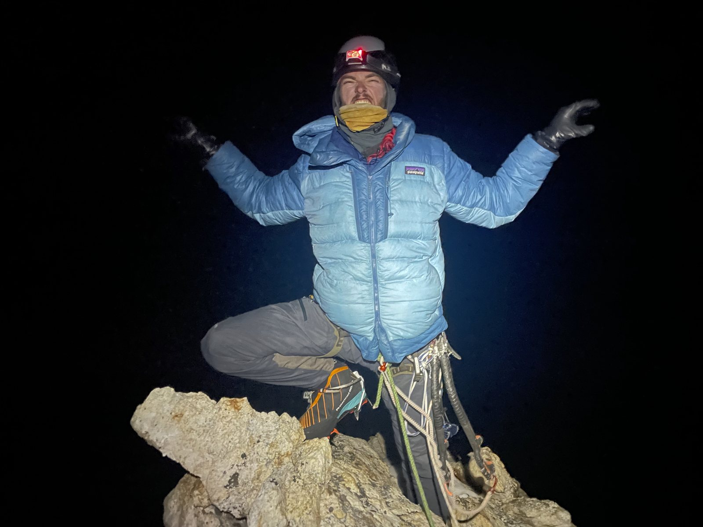
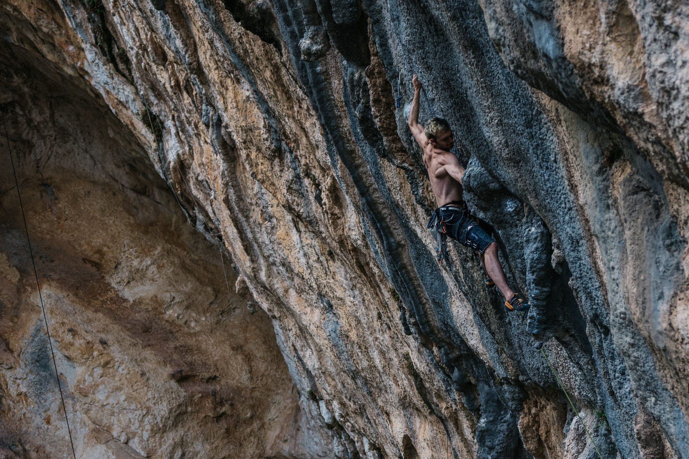

05About
Christian Black
“Have fun, be safe, look cool!”
Supported by
Christian Black is a rock climber, alpinist and paraglider pilot documenting his travels authentically through storytelling, photography and film. From boulders to high peaks or behind the lens, his multidisciplinary interests drive his passion and creativity for exploring the world around us through more than one medium.

